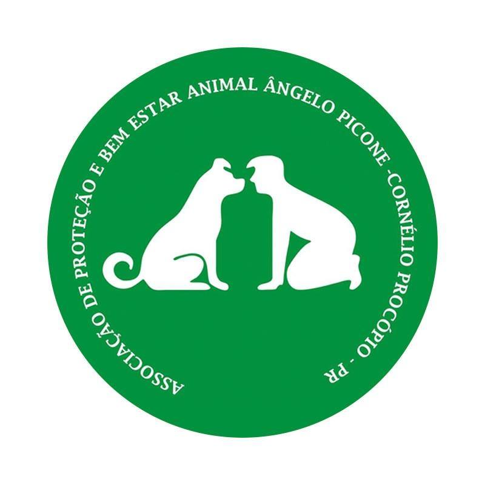
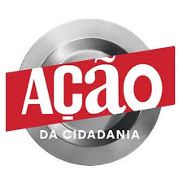
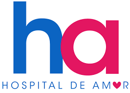
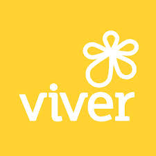

A ONG adota a Missão Integral, que busca viver a fé em Jesus Cristo de forma unificada
em todas as áreas da vida. Segundo a Declaração da Rede Miquéias, evangelismo e ação social não são separados,
mas interconectados. A missão é integrar o cuidado com o próximo e o testemunho da graça de Cristo, promovendo
justiça e transformação espiritual, material e estrutural.A organização acredita que a fé deve impactar todas
as dimensões da vida, assim como exemplificado por Jesus.

Proteção e Bem Estar Animal - Angelo picone
A Associação Angelo Picone é uma organização não governamental e sem fins lucrativos dedicada
ao cuidado e proteção dos animais. Com esforços independentes, a ONG trabalha para acolher, tratar e promover o
bem-estar dos animais, contando com a colaboração da comunidade para continuar suas atividades filantrópicas.

Ação da Cidadania
A Ação da Cidadania, fundada por Herbert de Souza (Betinho) em 1993, é um movimento social voltado
para combater a fome e a miséria no Brasil. Com uma rede de mobilização nacional formada por comitês locais e lideranças
comunitárias, a ONG busca apoiar os 32 milhões de brasileiros em situação de extrema pobreza.

Hospital de Amor
Com mais de 60 anos de história, o Hospital de Amor é reconhecido internacionalmente pela excelência
em tecnologia e cuidado humanizado. Considerado o maior polo de tratamento oncológico gratuito da América Latina, oferece
exames preventivos gratuitos, suporte completo a pacientes e familiares, e promove a produção científica por meio do Instituto de Ensino e Pesquisa (IEP).

Viver
A Organização Viver foi fundada em 2001 por quatro voluntários e, há mais de 23 anos, oferece apoio
social e bem-estar a crianças e adolescentes com câncer. A instituição surgiu a partir da identificação de necessidades além
da recreação, proporcionando um espaço dedicado para acolher e oferecer suporte às crianças e suas famílias durante o tratamento.
SOS Vida Animal
A SOS Vida Animal, fundada em 1989, atua em Londrina e região com o apoio de voluntários dedicados à causa animal.
A organização não acolhe animais, mas promove o bem-estar de cães e gatos por meio de eventos de adoção e campanhas de conscientização.
Taj Mahal
O Centro de Artes Circense, fundado em 2010 em Londrina, é uma filial da ONG Arte & Vida e tem como objetivo principal
desenvolver projetos sociais no campo do circo, além de promover as artes circenses. A instituição se tornou referência na área, contribuindo
para a formação e inclusão social por meio da cultura circense.